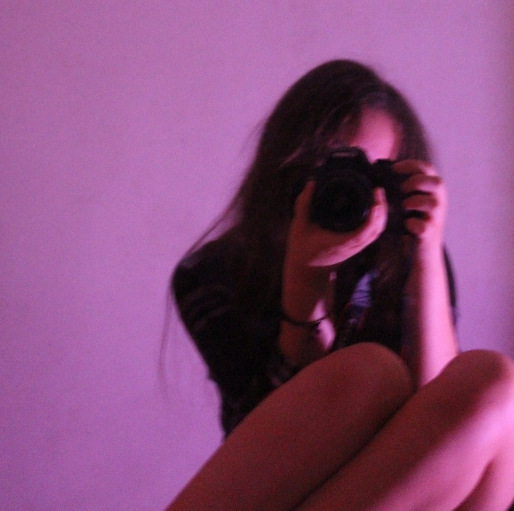
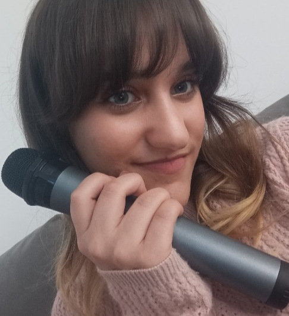

Mis aficiones
1.DIBUJAR Y PINTAR
Desde pequeña he mostrado interés en el arte. Me pasaba horas dibujando e intentando hacer retratos a mis familiares y amigos.
2.ESCRIBIR NOVELAS Y POESÍA
A la edad de 7 años comencé a escribir poemas y historias cortas, pues las clases de lengua en primaria me inspiraban. Afortunadamente esa creatividad y amor por la escritura se quedó conmigo hasta ahora.
En mi tiempo libre estoy escribiendo una novela llamada "EL RUBÍ" que algún día espero poder públicar.

3.HACER EJERCICIO
Últimamente he estado practicando calistenia en casa por las mañanas. Esto está ayudándome a manejar mejor el estrés, además de darme beneficios en cuanto mi salud.
4.PROGRAMACIÓN Y HACKING ÉTICO
Obviamente la programación no podía faltar. Hacer programas, páginas web, u otras cosas similares me hace muy feliz.
Mi fascinación por el hacking ético y la ciberseguridad nació en 2023, cuando hackearon la cuenta de Facebook de mi abuela. De alguna manera conseguí cambiar el correo del hacker con otro al que yo sí tenía acceso y acabé salvando la cuenta.

5.LEER
Leer me gusta tanto como me gusta escribir. Mi pasión por la literatura convirtió la lectura como un buen pasatiempo para descansar y desconectarme del mundo virtual cuando lo necesito.

·Algunos otros pasatiempos que tengo son:
- Fotografiar
- Bailar
- Cantar
- Aprender idiomas
- Participar en debates
- Jugar juegos online
 